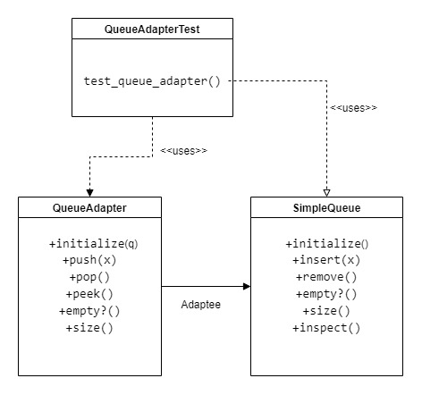

Adapter Method Pattern¶ ↑
This documentation was developed as part of a programming activity for the Software Design and Architecture course (Tc3049), at the Tecnológico de Monterrey, Campus Estado de México.
Authors¶ ↑
-
A01378916 Rafael Moreno Cañas
-
A01379896 Erick Bautista Pérez
Overview¶ ↑
The Adapter Pattern is a structural design pattern that allows objects with incompatible interfaces to collaborate. This pattern is used, when there are two or more objects, which need to communicate to each other, but unable to do so, because their interfaces do not match. And the adapter is kind of a bridge between these objects.
The UML diagram for this programming activity is as follows:

To test the program, inside the src folder type the following instruction at the command line:
ruby -I . -w adapter_test.rb
References¶ ↑
-
Gasanov, R. (2020). Adapter Design Pattern Usage In Rails Application On Examples
-
Rustam A. Gasanov. Retrieved 11 April 2020,
from rustamagasanov.com/blog/2014/11/16/adapter-design-pattern-usage-in-rails-application-on-examples/
-
R. Olsen. Design Patterns in Ruby. Addison-Wesley,
2007.